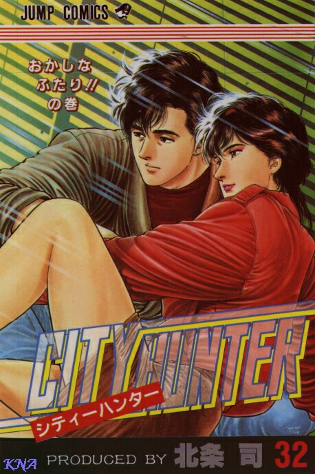

Tsukasa HOJO est surtout connu dans nos contrées pour les récits de Cat’s Eye et City Hunter. Avant de débuter le célèbre manga qu’est City Hunter (qui a dit “je ne connais pas” ?) en décembre 1985, Hojo avait auparavant publié des histoires courtes où Ryo était présent.

Introduction
En 1983, il écrit City Hunter XYZ (une femme demande à Ryo de la protéger contre des gens de la pègre) et City Hunter Double Edge (Ryo est ici engagé par une comédienne pour se faire protéger d’un psychopathe qui tue ses victimes de la même manière que le héros de la pièce de théâtre Double Edge). Ces deux nouvelles serviront de modèle pour le manga qui débutera en 1985. Notons tout de même qu’ici, Ryo travaille déjà avec Kaori et qu’ils connaissent tous deux les sœurs KISUGI, du fameux trio Cat’s Eye.
Tsukasa HOJO débute le manga City Hunter en décembre 1985, publié dans l’hebdomadaire Weekly Shonen Jump. Ici, ce ne sont plus de jolies voleuses qui sont les héroïnes, mais un garde du corps ou de tueur à gages selon la demande du client (le plus souvent, c’est une cliente d’ailleurs…). Celui-ci travaille avec Kaori MAKIMURA, qui est devenue sa partenaire à la mort de son frère, Hideyuki MAKIMURA. Le succès du manga n’est plus à prouver et les fans demandent même des liens plus étroits entre les deux personnages principaux (ne rêvez pas, il n’y aura pas de mariage… sinon, la série serait terminée).
En décembre 1991, Tsukasa HOJO termine City Hunter dans le Weekly Shonen Jump et en avril 1992 pour les volumes reliés de la collection Jump Comics. Le manga City Hunter comprend 35 volumes dans l’édition japonaise. L’adaptation française dont s’occupe les éditions J’ai lu est plutôt réussie: les noms d’origine sont gardés, le sens de lecture reste au standard japonais.
Evolution du style de Tsukasa Hojo
Dans City Hunter, HOJO a su mélanger action, humour et émotion. C’est cette diversité qui fait de ce manga un des plus appréciés.
Tsukasa HOJO dessine d’un trait réaliste, que ce soit au niveau des personnages que des bâtiments (les détails de la gare de Shinjuku montrent d’ailleurs la précision du coup de crayon). Au niveau du style, les divers volumes de City Hunter pourraient être divisés en trois parties:
-
les volumes 1 à 14 (décembre 1985 - juin 1988): les dessins restent encore dans la lignée des derniers tomes de Cat’s Eye. Ce sont surtout des premières ébauches qui montrent une évolution du style.
-
les volumes 15 à 31 (août 88 - mai 91): ici, on observe une nette progression tant au niveau du graphisme que du scénario, qui plus est recherché, plus travaillé. Les personnages évoluent au fil des volumes, notamment le rôle de Kaori, qui devient plus présente et qui n’est plus seulement ici pour donner des coups de massue à Ryo.. Elle a les cheveux un peu plus longs, garde le même caractère; mais devient peu à peu un personnage important et ne sert plus seulement de faire-valoir au héros. L’évolution du style se suit d’une évolution entre les deux personnages principaux. Dans ces volumes, le talent de Tsukasa HOJO se manifeste par la maîtrise du trait.
-
les volumes 32 à 35 (juin 91 - décembre 91): la perfection n’existe peut-être pas, mais HOJO en est très proche dans ces volumes. La maîtrise des précisions du décor et du contraste est réelle. Un nouveau personnage apparaît ici, Mick Angel, qui permet d’accélérer le dénouement du manga. On peut d’ailleurs regretter la non-adaptation au petit écran de ces 4 derniers volumes, la série s’arrêtant avant, ce qui est un peu dommage.
Dans Komori no shitade (Sous un rayon de soleil), le style de Hojo reste dans la même lignée. Notons que l’action est plus simple dans ce manga. Dans Rash, le style graphique de Hojo est moins travaillé, la qualité des illustrations ne vaut plus ici les derniers volumes de City Hunter.
Enfin, dans Family Compo, le style est d’une bonne qualité, les planches en couleurs des premières pages restent un réel plaisir pour les yeux. Nous pouvons donc remarquer que le style graphique ne se retrouvera pas aussi forte et présente dans ses autres œuvres.
Les décors sont présents dans City Hunter et dessinés d’un trait réaliste. Au niveau graphique, les perspectives et les diverses prises de vue de Tokyo sont d’une excellente qualité. Des buildings de Shinjuku en passant par la gare aux vieux temples bouddhistes, tout est représenté. Avec une telle précision, certains dessins semblent ressembler à une photo en noir et blanc.
Réalité illusoire…
Ryo et Kaori habitent un immeuble à Shinjuku, quartier des affaires commerciales le jour et quartier “chaud” la nuit où les cabarets (endroits souvent fréquentés par Ryo…), les bars et les truands semblent se regrouper. Ryo fréquente cet endroit, car il a beaucoup de connaissances dans ce milieu, où les yakuzas sont de la partie.
La réalité que décrit HOJO est parfois un peu illusoire. Le port d’armes est interdit au Japon et pourtant, tous les personnages de City Hunter sont armés. Ryo possède n arsenal tout entier au sous-sol de l’immeuble, or cela est illégal, de même que la salle de tir installée sous le café Cat’s Eye, tenu pas Miki et Umibozu.
On ne s’étonne pas non plus des dettes de Kaori et Ryo lorsqu’on voit leur immeuble et qu’on compare avec le prix du mètre carré à Tokyo, qui est plutôt élevé…
…mais psychologie présente
City Hunter est un personnage mythique, rempli de symboles. Il représente en fait une justice, là où les pouvoirs publics et la police ne peuvent plus rien faire. Ryo incarne ainsi le dernier recours face aux crimes. Certes, tous ses procédés ne sont peut-être pas légaux, mais la justice à n’importe quel prix pourrait être sa devise. Tueur à gages ou garde du corps, sa fonction varie selon la demande du client (qui est bien souvent une jolie cliente…).
Tous ceux du milieu le connaissent, au moins par sa réputation (autant en tant que professionnel invincible que pour son attirance pour les femmes). Beaucoup de ses ennemis ont essayé de le tuer, mais en vain.
Une des caractéristiques du manga est l’humour délirant que HOJO déploie: mimiques, “mokkoli” (le “coucou” de Ryo), cascades, coups de massues géantes et autres trouvailles (ex: électrochocs) de Kaori. Cet humour n’est pas seulement là pour le plaisir, il a aussi la fonction de dédramatiser les histoires, car le monde de City Hunter est rempli de morts, de drames et d’attentats (parfois même à la pudeur… NDCorrecteur). D’ailleurs, à chaque fois que la situation vire au mélodrame (la jeune fille qui a perdu son petit ami par exemple), Ryo se sert de son “coucou” pour faire oublier les mauvais souvenirs, ce qui lui amène des coups de massue de la part de Kaori.
Le personnage de Ryo
Ryo ressemble à première vue à un véritable obsédé sexuel, courant après toutes les jolies filles qu’il croise dans la rue. Si on regarde de plus près, on peut noter que Ryo n’a pas eu un passé facile. Traumatisé par la mort de ses parents dans un accident d’avion, puis devenu mercenaire, il fut élevé dans un milieu masculin, rempli de combats et de destructions. Vu le métier qu’il exerce, Ryo ne sait jamais ce que lui réserve le destin. Il peut mourir d’un instant à l’autre, pouvant être abattu à tout moment. Il profite ainsi des plaisirs de la vie: boire, manger, rigoler… sans oublier les femmes, sans qui il ne pourrait vivre.
Mais lorsque survient un danger, Ryo devient un autre homme, l’obsédé laisse place au guerrier défendant les faibles. Ryo n’a plus de parents et peu d’amis, sauf ceux qui sont du même milieu que lui. La personnalité de mercenaire de Ryo est due au traitement que lui a fait subir Kaibara, en le soumettant à Angel Dust, drogue expérimentale qui a poussé ses instincts primaires et mis ses caractéristiques physiques à son point fort; c’est pourquoi Ryo est aussi doué au tir, au combat… Même s’il n’est plus sous l’emprise de la drogue, Ryo en garde des traces, conservant ainsi un 6e sens qui le prévient lors des dangers. Evidemment, il a refoulé son passé et refuse d’en parler.
Ryo est donc un personnage aux facettes multiples. Hojo aborde une certaine réflexion sur l’identité de l’homme, sur la limite entre le Bien et le Mal. Ryo est un personnage qui est loin d’être parfait. Il possède des points faibles et cela le rend attachant (dans le manga n° 23, sa peur des avions prouve qu’il est loin d’être invincible et que chaque être humain a en lui des peurs). Sa principale faiblesse est bien évidemment les femmes, et tout ce qui peut tourner autour (il suffit de voir l’attrait de Ryo pour les sous-vêtements féminins…). Malgré ce que l’on pourrait penser, Ryo tient beaucoup à Kaori, même s’il ne l’avoue pas. Sensible, il cache ses sentiments envers Kaori pour ne pas la mettre en danger. Ainsi, il drague toutes les femmes sauf elle, la considère comme un simple partenaire, comme un garçon (voire même comme son petit frère pour pouvoir mieux séduire la cliente) et fait en sorte que personne ne sache qu’il tient à elle. Si c’était le cas, Kaori serait en danger, les truands se servant d’elle pour réussir à battre Ryo. Du fait de sa profession dangereuse, il se dit qu’il ne peut pas aimer et rendre heureuse une femme. C’est pourquoi il considère Kaori comme un coéquipier.
Ryo a aussi un côté protecteur envers les enfants, qui voient en lui une personne chaleureuse et courageuse.
Le personnage de Kaori
Kaori est, à première vue, un garçon manqué: cheveux courts, pantalon… Elle ne porte que rarement des bijoux et des robes. Une raison simple à cet habillement quelques fois masculin est que Kaori ne peut se permettre d’être habillée sexy du fait de sa profession. Vous l’imaginez courir pour échapper aux truands en jupe courte et escarpins ? Donc, question pratique, elle reste sobre et même au risque de se faire prendre pour un homme (ce qui arrive parfois…). Mais, elle peut-être féminine lorsqu’elle est en robe (telle celle que lui a offert sa sœur, Sayuri TACHIKI, dans le manga n° 20). Kaori a une personnalité paradoxale, car elle est au fond très romantique et très féminine. Sentimentale, elle envie parfois les autres femmes d’avoir une vie normale. Mais pour rien au monde, elle ne voudrait changer de travail.
Ryo la considère comme un homme et la cherche bien souvent sur le sujet, ce qui lui apporte des coups de 100 tonnes sur la tête. Pourtant, lorsque Kaori a des vêtements éminins ou est en maillot de bain, il ne peut s’empêcher de s’avouer que Kaori est une jolie jeune femme. Ce qui lui fait défaut de son côté féminin, c’est qu’elle a des réactions plutôt violentes parfois (Ryo en est le témoin principal d’ailleurs…).
Elle porte toujours une arme sur elle, arme qui ne peut viser juste puisque Ryo a volontairement trafiqué le revolver pour que Kaori ne puisse pas avoir de sang sur les mains (bonjour les bavures… NDCorrecteur).
Kaori possède comme souvenir de sa vraie mère une bague, sa sœur Sayuri possédant la même.
Elle est très jalouse et les coups de massue envoyés à Ryo lorsqu’il s’approche d’un jolie femme en sont la preuve. Elle camoufle par la colère les sentiments qu’elle éprouve pour lui.
Elle a su cerner la vraie personnalité de Ryo, qui, derrière le masque du coureur de jupons, cache une solitude et une sensibilité ; ainsi que des valeurs humaines (la justice, la loi, le Bien).
Notons enfin que Kaori est plus féminine dans le manga que dans la version TV, ce qui la valorise un peu plus. Dans le manga, Kaori n’est pas seulement présente pour punir Ryo de ses sorties nocturnes ou de ses attraits pour les femmes (les belles de préférence NDCorrecteur). Elle a un réel rôle qui s’étoffe tout au long des volumes et devient peu à peu la coéquipière à part entière de Ryo.
La place des femmes dans le manga
Même si Ryo reste le héros principal de City Hunter, il n’en demeure pas moins que les femmes ont un rôle important pour le bon déroulement de l’histoire. Eh oui, s’il n’y avait pas de jolies clientes, Mr Saeba n’aurait pas de travail !.. Kaori, Saeko, Miki, sans oublier toutes les clientes telles que Yoshimi Iwai, Maiko Tsugihara ou encore Yumiko Satoh… les personnages féminins sont omniprésents dans City Hunter. Toutes sont d’une beauté sublime, avec des corps de déesse et un charme à faire craquer beaucoup d’hommes. Celles-ci ne sont pas seulement présentes dans le manga pour montrer l’invincibilité de Ryo qui les protège et les défend, ce serait à mon avis plutôt l’inverse (eh oui, n’oubliez pas que Ryo est l’esclave des femmes !).
Si, à première vue, Ryo semble invincible, il reste malgré tout quelque peu fragile devant la gent féminine. Entre Saeko qui l’utilise pour ses talents de professionnel et Kaori qui le bombarde à coups de massue, Reika se sert elle City Hunter, le héros domine la situation vis-à-vis des truands, mais pas vis-à-vis des femmes. L’homme, dans City Hunter, se fait plus souvent dominer par la femme. Même Falcon se laisse attendrir par Miki et accepte de l’aider au café, au risque même de se faire ridiculiser en portant le tablier Piyo-Piyo…( il est pas mimi comme ça ?.. Quand on pense qu’il a été mercenaire…).
Ce genre de relations entre hommes et femmes dans City Hunter permet de rendre la situation comique, mais aussi de montrer qu’aucun être humain n’est invincible et que la femme n’est pas dépendante de l’homme, mais son égale.
Notons enfin que dans City Hunter, aucune femme ne tient le rôle d’un réel truand. Si une femme est du mauvais côté de la justice au début de l’histoire, alla se rendra compte avant la fin du scénario de son erreur et se remettra sur le droit chemin. De ce fait Hojo n’a pas voulu briser dans ce manga la relation qui existe entre hommes et femmes.
Comment se termine le manga ?
Comment Tsukasa HOJO conclut-il l’histoire entre Ryo et Kaori ?… Vous voulez vraiment le savoir… Bon, allez, je ne vais pas vous faire attendre plus longtemps. Le dernier volume contient bien un mariage, mais pas entre Ryo et Kaori (ooh…) mais entre Miki et Falcon (aah…). Je sais, c’est dommage pour notre couple préféré mais pensez un peu à ce qu’aurait donné un mariage entre Ryo et Kaori.
La série se serait obligatoirement terminée et nous n’aurions pas eu droit aux films qui ont suivi le manga (ce qui aurait été vraiment dommage, vous ne croyez pas ?…).
Dans le volume 35, Ryo sauve Kaori des griffes du général KOROITSU, celui qui a commandé le programme Angel Dust. Kaori se réfugie dans ses bras et ils savourent cet instant en restant tous les deux. Ensuite, Tsukasa HOJO continue de montrer les personnages dans leur vie habituelle.
Cette fin permet une ouverture pour de futures animations, Ryo continuant de courir les jolies filles et Kaori le poursuivant de sa massue…
Dans les derniers volumes, on apprend de plus en plus sur le passé de Ryo. Celui-ci, après avoir perdu ses parents dans un accident d’avion, de retrouve dans un camp de mercenaires où Falcon et le père de Sonia FIELD sont présents. A un moment donné, Ryo tue la section de guérilleros de Falcon et blesse ce dernier aux yeux. Nous apprenons aussi que le surnom de City Hunter a été créé par Mick ANGEL et Ryo lorsque ceux-ci étaient partenaires aux USA et avaient choisi pour nom de code City Hunter.
Je ne vous en dis pas plus et je vous conseille de lire les derniers volumes qui sont sublimes tant au niveau du scénario que de la qualité du graphisme…
Un grand merci à Nicolas pour son aide.